TFG (Trabalho Final de Graduação)
Descrição do Projeto
O projeto do Centro Veterinário São Francisco de Assis localiza-se na cidade de Rosário do Sul e consiste em uma clínica veterinária com atendimento de emergência e tratamento clínico e cirúrgico para animais de pequeno porte, um abrigo e um hotel para estadia dos pets. A intenção é que o local atenda não só a cidade em que está inserido, mas toda a região que o circunda.
Como conceito formal de projeto foi utilizado o elo de ligação entre o ser humano e o animal de estimação, apresentado por meio da integração entre a mão humana e a pata animal. Partindo dessa relação, surgiram dois blocos no pavimento térreo com inclinação de 157 graus, que remete ao ângulo formado pelo movimento da cauda dos cães ao se sentirem felizes.
O maior bloco representa a mão humana no sentido de proteção e cuidado com os animais e abriga as atividades médicas e sociais do centro veterinário. O segundo bloco, um pouco menor, representa a pata do animal com resguardo pelo bloco da clínica, acomodando as atividades administrativas e de hotelaria para cães, gatos e outros pequenos animais, juntamente com uma parte do setor de serviços. No térreo, entre os blocos, existe um pátio central livre e amplo que permite a recreação e convivência dos animais com os visitantes do local.
A edificação possui um tom mais rústico de cinza e é acompanhada de tons pertencentes à gama de cores vista pelos animais, ou seja, tons de amarelo, azul e cinza, sendo utilizadas em placas metálicas que revestem parte do segundo bloco. Em toda parte do abrigo do segundo pavimento foram utilizados brises verticais móveis a fim de melhorar o conforto térmico do ambiente.
O projeto foi modelado no software SketchUp e renderizado com o VRay para SketchUp 2.0.
 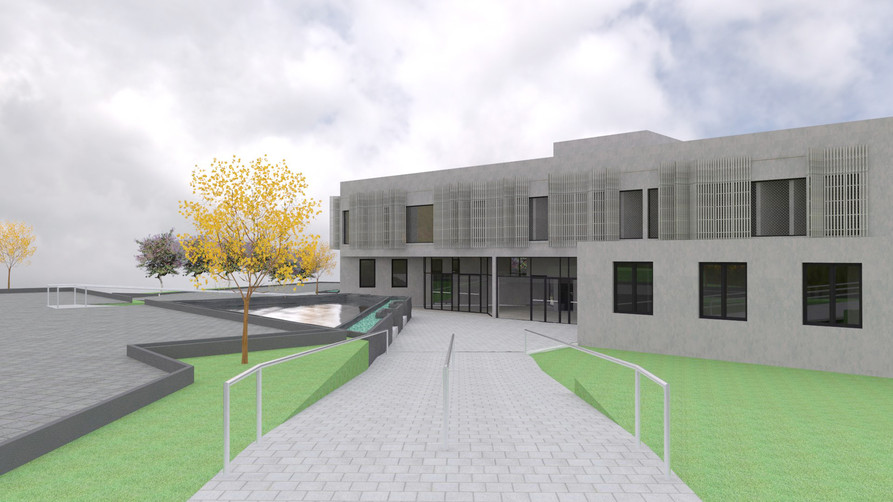
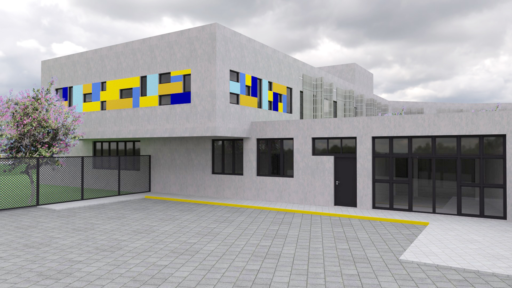
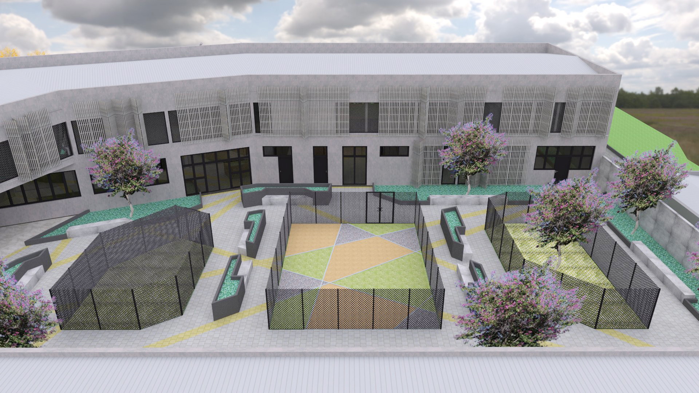
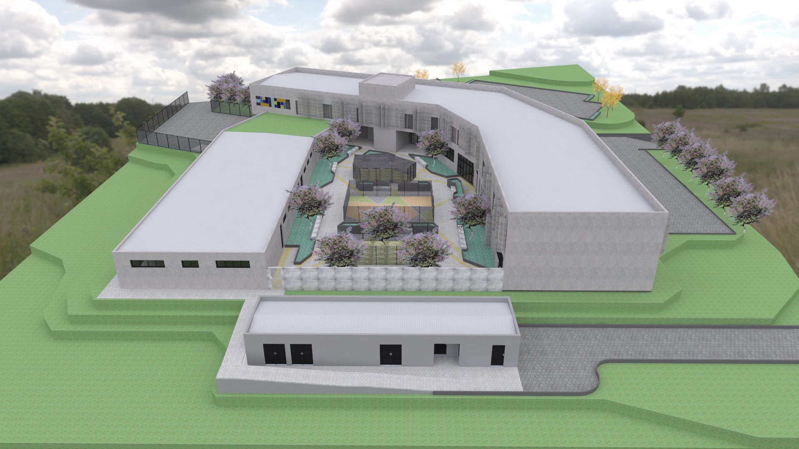
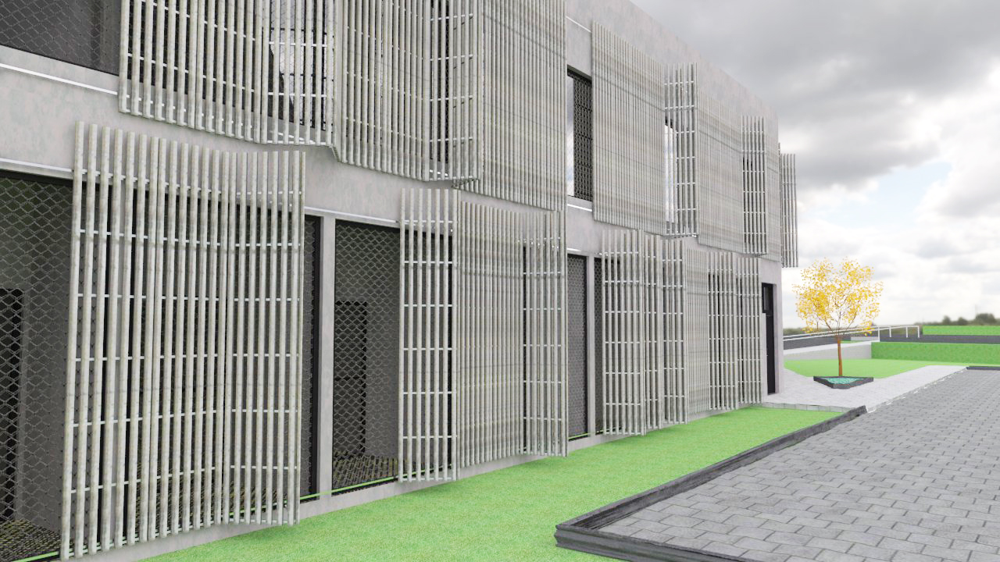
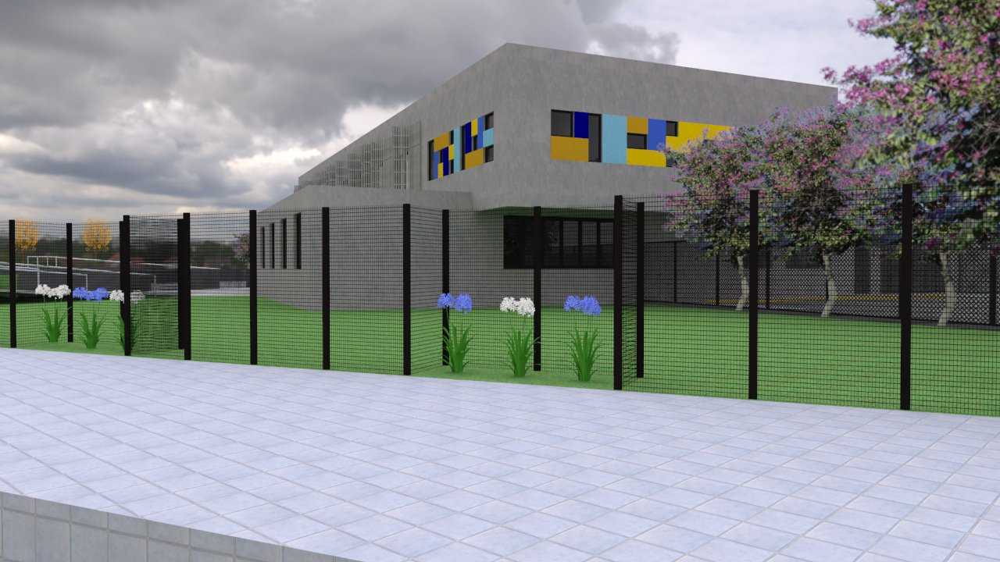
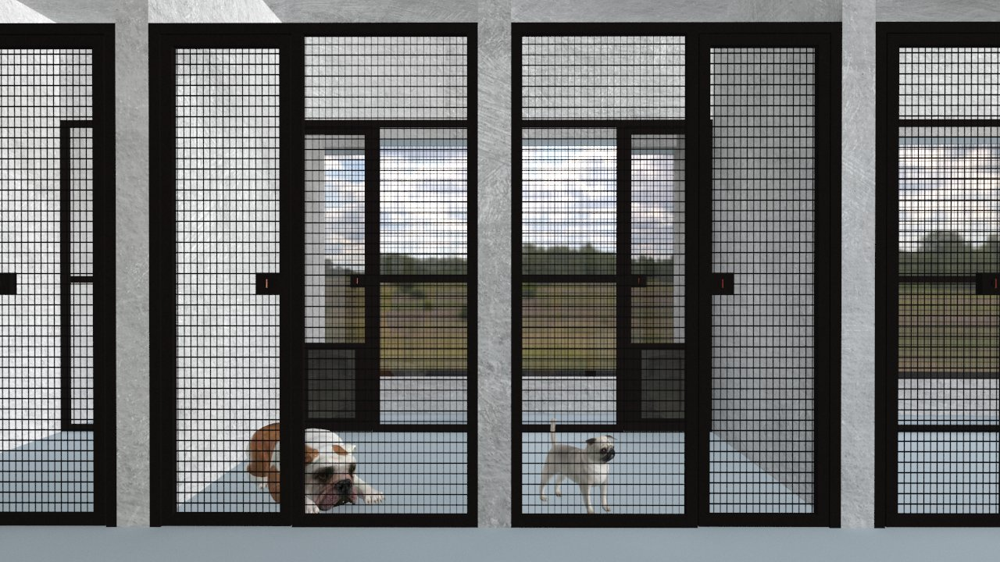
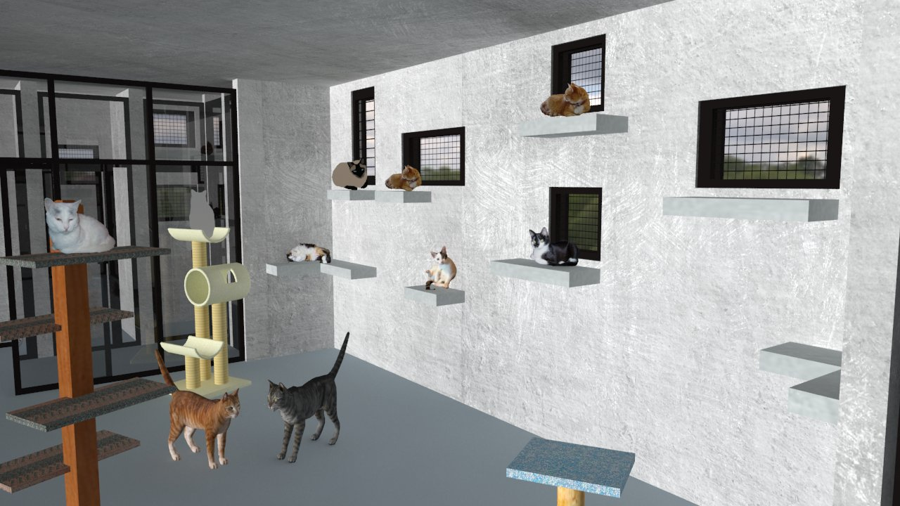
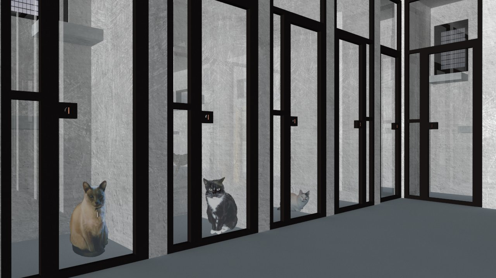
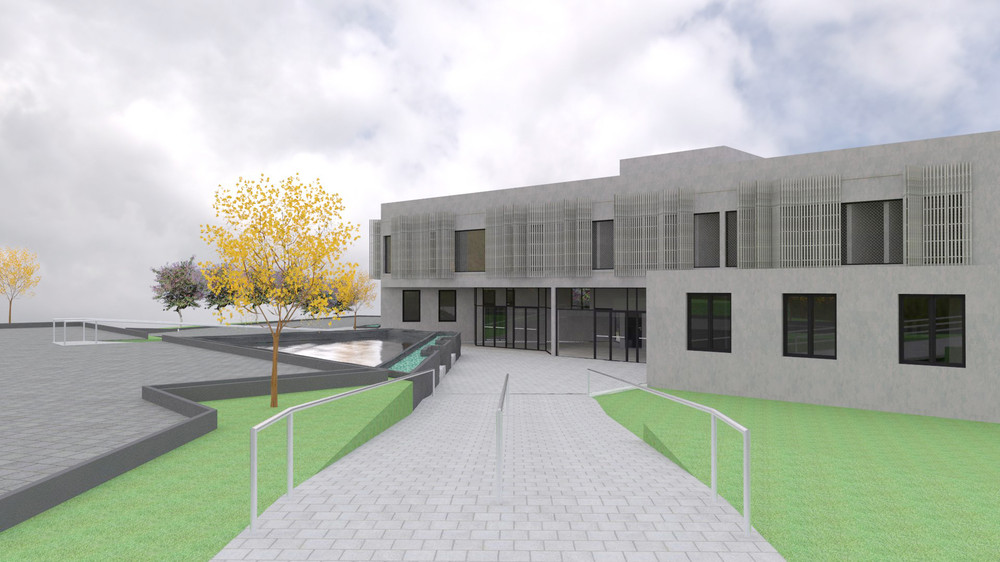
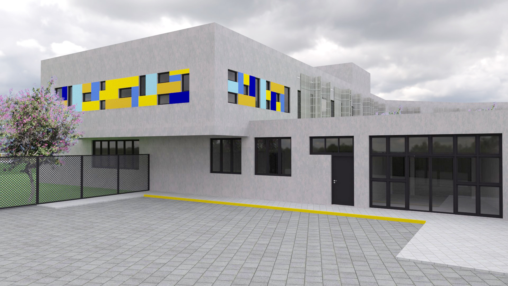
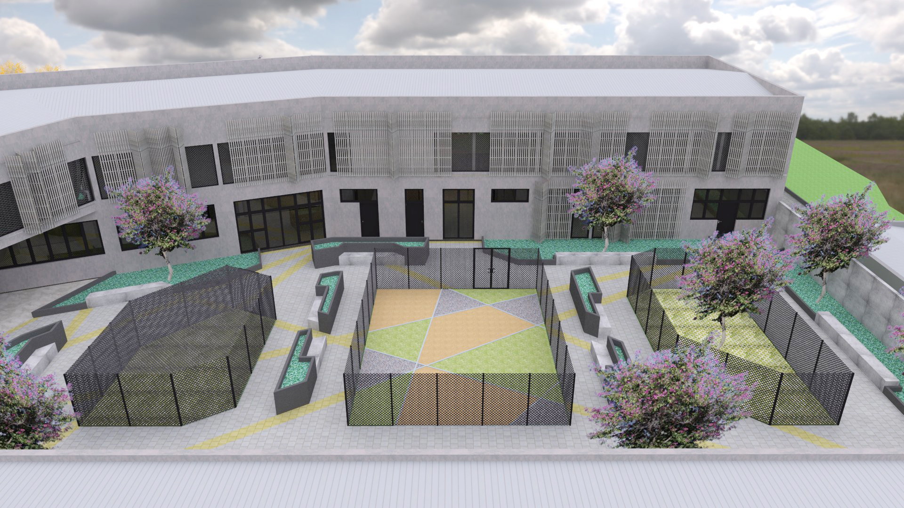
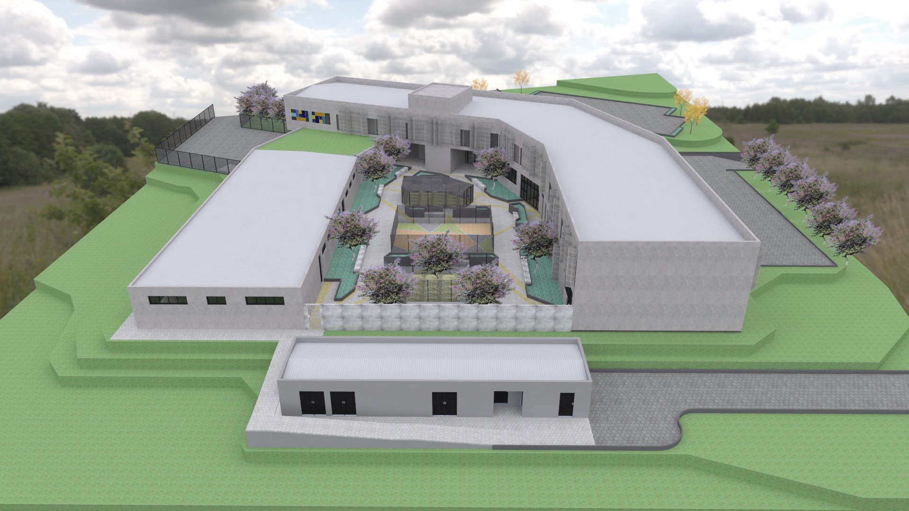
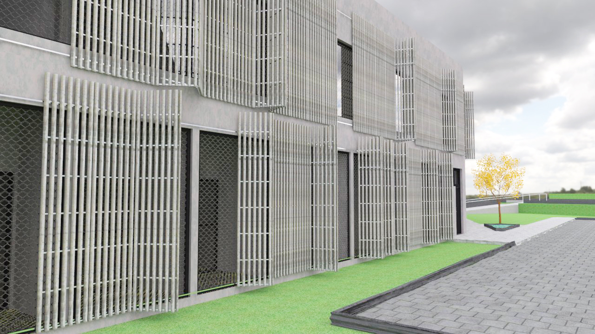
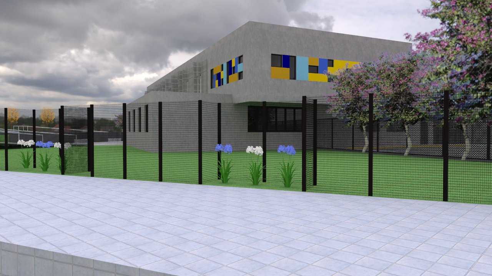
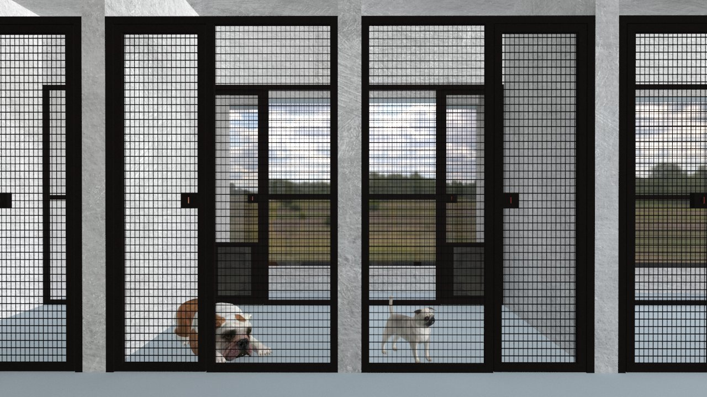
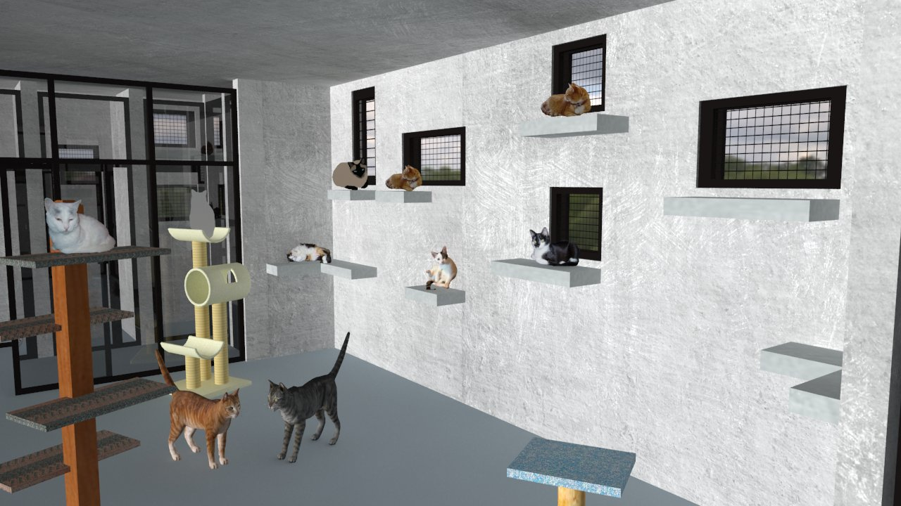
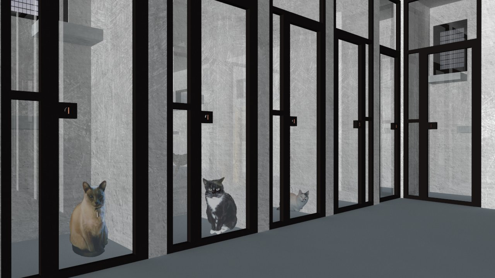
Voltar ao portfólio